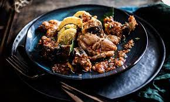
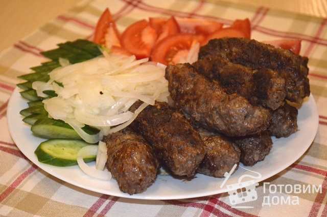
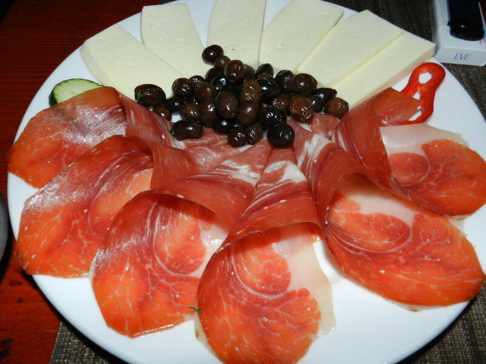
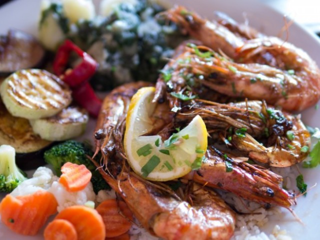
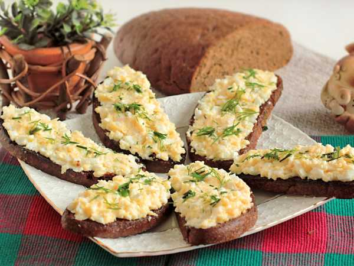
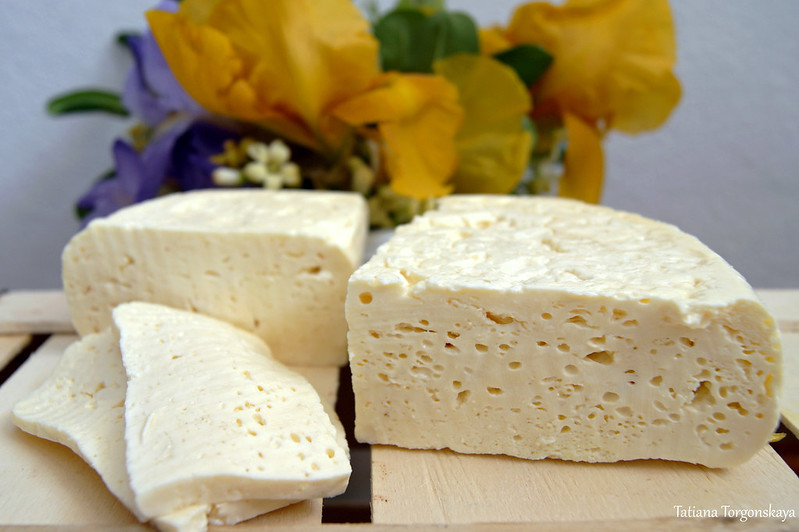
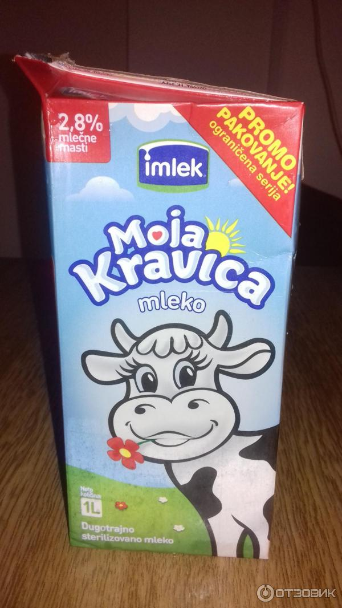
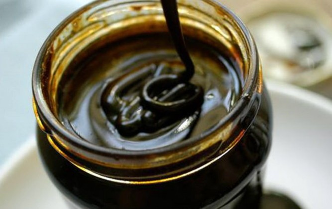

Черногорская кухня представляет собой уникальное сочетание средиземноморской, балканской и итальянской кулинарных традиций. Она радует гостей разнообразием вкусов, свежих ингредиентов и теплом гостеприимства.
Мясо занимает важное место в черногорской кухне, и гостям предлагают разнообразные блюда, приготовленные с использованием свежих и качественных ингредиентов. Одним из популярных мясных блюд является Чевапчичи - небольшие говяжьи или свиные котлеты, подаваемые с лепешкой и киселем.
  Благодаря берегам Адриатического моря, черногорская кухня богата разнообразными рыбными блюдами. Грильованная рыба с местными травами и оливковым маслом - настоящая находка для любителей морепродуктов.
Ненадская погача - традиционный черногорский хлеб с добавлением масла и сыра, является неотъемлемой частью местной кухни. Черногорские сыры, такие как Плавски сир и Чедар Черногории, также пользуются популярностью среди гурманов.
  Мед является важным продуктом в черногорской кулинарии. Местные пчелы производят натуральный мед различных сортов. Пршут - это традиционный черногорский сладкий хлеб с медом, орехами и фруктами.
Погружение в черногорскую гастрономию - это не только открытие новых вкусов, но и возможность погрузиться в культуру и традиции этой удивительной страны.
Разделы нашего сайта: